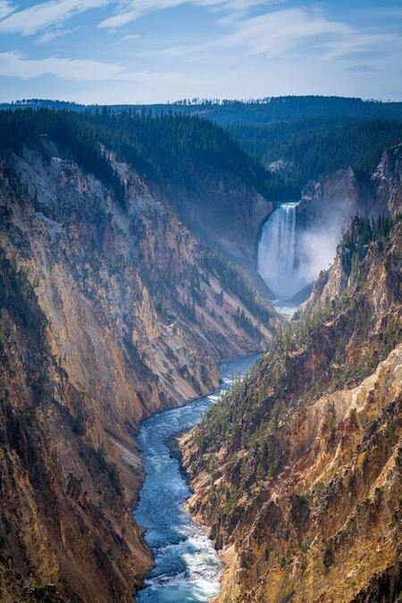
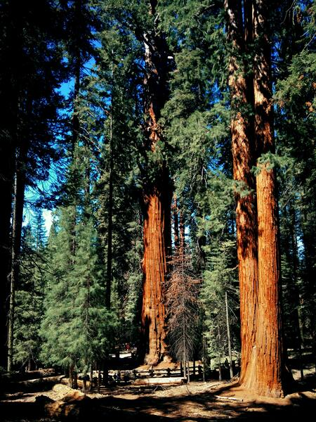

Yellowstone

National parks have been around for 150 years. The first park was created in 1872.
Yellowstone was the first and is the oldest in the world. This park is most famous for its geysers, the most popular of which is Old Faithful.
Sequoia

Sequoia National Park is the second-oldest national park. This park is located in California and was established in 1890.
This forest is home to the largest trees in the world.
National parks around the world
- Joshua Tree, California
- Fuji-Hakone-Izu, Japan
- Vatnajokull, Iceland